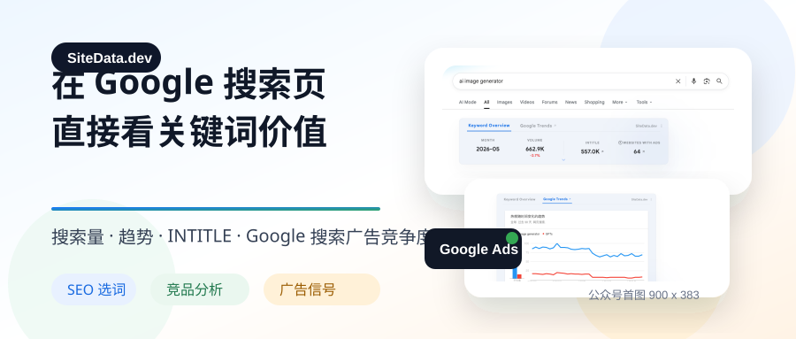
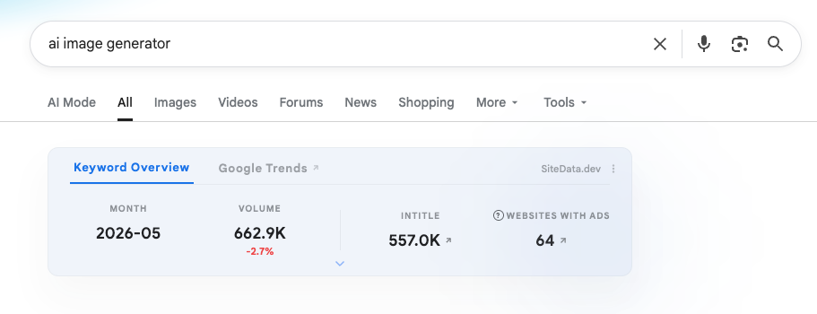
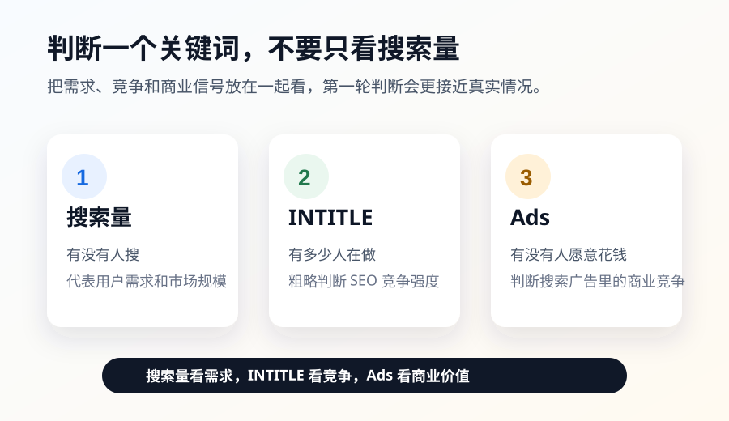
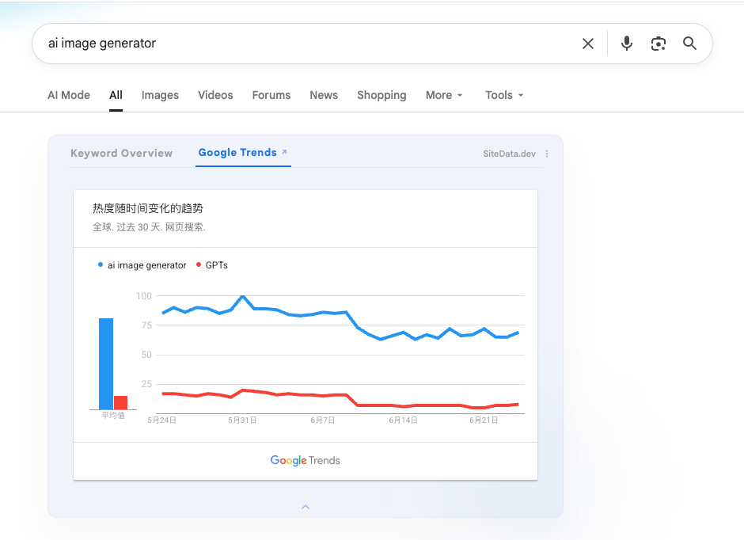
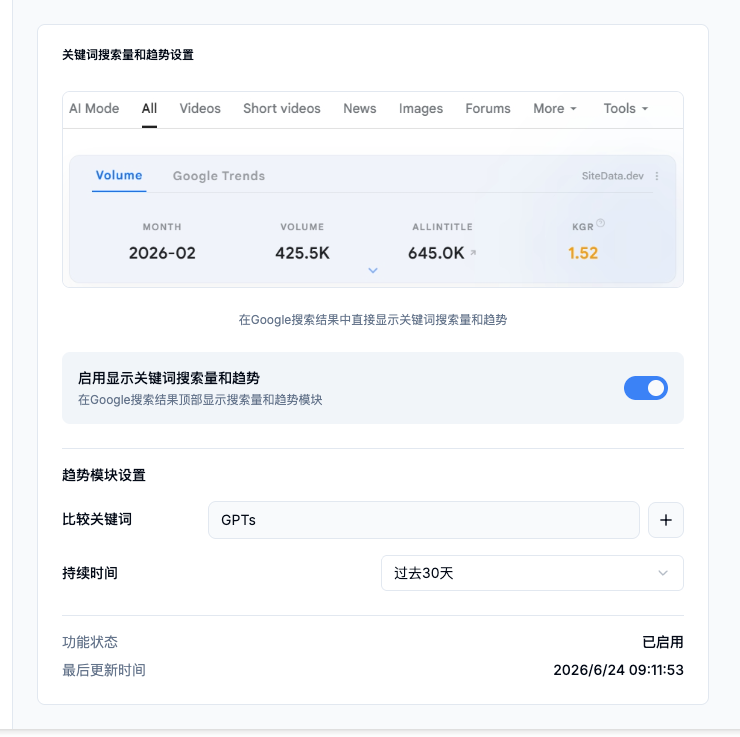
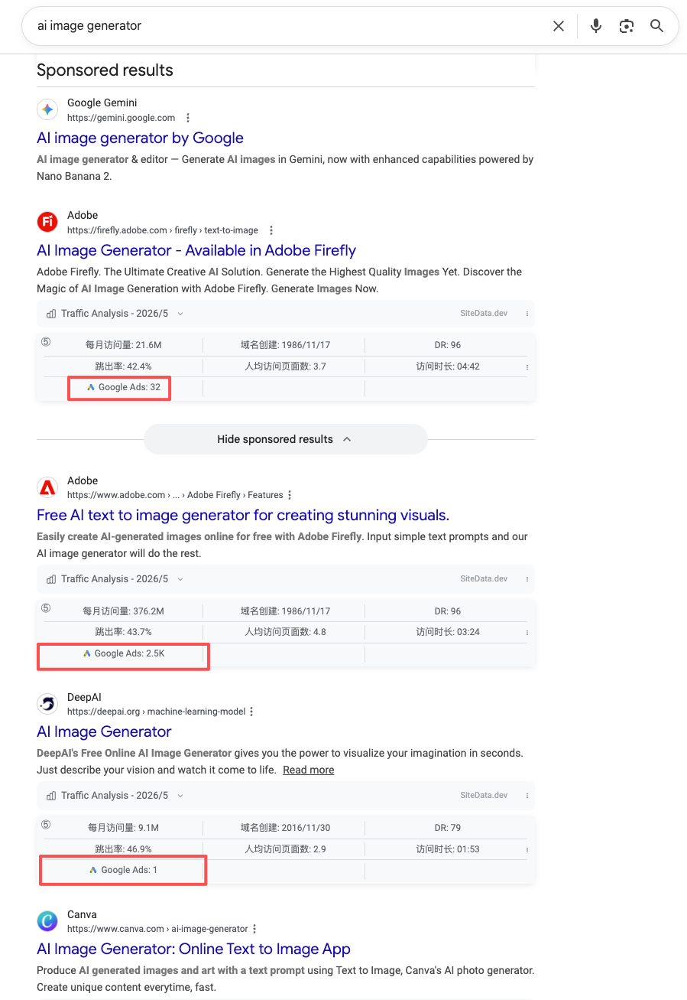
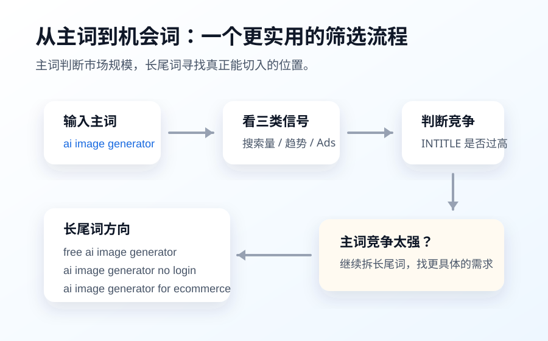

做关键词研究的时候，很多人都会遇到一个问题：
你在 Google里搜索一个关键词,只能看到搜索结果本身.
但真正影响判断的，往往不只是「有哪些网页排在前面」。
你更想知道的是：
- 这个关键词有多少搜索量？
- 最近热度是在上升还是下降？
- SEO竞争大不大？
- 有没有网站正在为这个关键词投广告？
- 搜索结果里的这些网站，最近有没有商业投放行为？
以前要看这些信息，通常需要在多个工具之间来回切换：Google 搜索、Google Trends、SEO 工具、广告透明度工具、竞品分析工具……
这次 SiteData 新增的功能，就是想把这些信息直接放到Google搜索页里。
当你搜索一个关键词时，不用离开当前页面，就可以快速完成第一轮判断。
1. 搜索关键词时，直接看到关键词核心数据
现在，当你在Google搜索一个关键词时，SiteData会在搜索结果页面展示一个关键词概览模块。
比如搜索：
ai image generator
你可以直接看到这个关键词的几个核心指标：
- 最近一个月搜索量
- 搜索量环比变化
- INTITLE 数量
- 最近有多少个网站在投放Google搜索广告

这些数据可以帮助你快速判断一个关键词是否值得继续分析.

搜索量 代表这个词有没有用户需求。
INTITLE 代表有多少页面在标题里布局了这个关键词，可以粗略判断 SEO 竞争强度。
Websites with Ads 代表最近有多少个网站正在为这个关键词投放 Google搜索广告，可以用来判断商业价值和广告竞争度。
简单说：
搜索量告诉你有没有人搜。
INTITLE 告诉你有多少人在做。
广告网站数量告诉你有没有人愿意花钱买这个流量.
这三个数据放在一起，比只看搜索量更接近真实情况。
2. 为什么要加入 Websites with Ads？
很多人在做关键词研究时，习惯先看搜索量。
但只看搜索量，其实很容易误判。
有些关键词搜索量很高,但转化价值不一定强。
有些关键词搜索量一般，但商业价值可能很高。
还有一些关键词，看起来竞争不大,但其实已经有很多广告主在持续投放。
所以，我们新增了一个指标：
Websites with Ads
它表示最近一段时间内，有多少个网站在为这个关键词投放 Google 搜索广告。
如果一个关键词有不少网站在投广告，说明这个词背后大概率存在商业价值。
当然，这不代表你一定要去做这个词。
它只是一个更直接的商业信号。
比如一个关键词：
- 搜索量很高
- INTITLE很高
- 投广告的网站也很多
那它大概率是一个热门市场，但竞争也会非常激烈。
如果你是新站，可能不适合直接硬刚主词，而是应该继续挖长尾词.
但如果一个关键词：
- 搜索量适中
- INTITLE 不算夸张
- 同时也有一些网站在投广告
这种词反而可能更值得深入研究。
3. 直接在搜索页查看 Google Trends 趋势
除了关键词概览，SiteData 还新增了 Google Trends 趋势模块。
以前你想看一个关键词的趋势,通常要打开Google Trends，再重新输入关键词，选择地区、时间范围,再进行对比。
现在你可以直接在Google 搜索结果页里查看趋势。

你可以设置：
- 对比关键词
- 时间范围
- 趋势周期
比如你搜索 ai image generator,可以直接和其他关键词进行对比，看看最近 30天谁的热度更高，谁的走势更稳定。
这个功能适合用来判断：
- 一个关键词是不是短期热点
- 热度是上升、下降，还是稳定
- 两个相似关键词之间，哪个更值得优先做
- 当前搜索量是否还能代表真实趋势
如果你觉得这个关键词确实值得继续分析，也可以一键跳转到Google Trends 查看更完整的数据。
这样就不用在 Google搜索页和Google Trends之间来回切换了。
4. 趋势模块可以自定义对比词和时间范围
除了直接查看趋势，你也可以在 SiteData的设置里调整趋势模块。
比如你可以自定义对比关键词，也可以调整趋势统计的时间范围。

这对做关键词比较尤其有用.
有时候两个词看起来意思差不多,但真实热度完全不同。
比如：
- ai image generator
- AI image maker
- text to image AI
- free AI image generator
这些词都和 AI图片生成有关，但用户搜索意图、商业价值、竞争强度可能并不一样。
如果能在搜索页里直接对比趋势，你就可以更快判断哪个词值得优先分析。
5. 搜索结果里的每个网站，也能看到广告投放行为
除了关键词层面的数据，我们还在 Google搜索结果页面里增加了网站层面的广告数据。
当你浏览SERP搜索结果时，SiteData 会结合我们自己的广告数据，显示这个网站最近四周是否有 Google搜索广告投放行为,以及大概投放了多少条广告。

比如你搜索一个关键词后，可以直接看到:
- 某个网站最近有没有投广告
- 投放了多少条 Google搜索广告
- 自然排名靠前的网站，是否也在买广告
- 这个行业里哪些网站商业化动作更明显
这个功能对做竞品分析很有用。
因为你不只是看到「谁排在前面」，还可以看到「谁最近在花钱买流量」。
有些网站自然排名不错,同时还在投广告.
这通常说明它对这个关键词很重视，也可能说明这个关键词带来的转化价值比较高.
有些网站排在前面,但没有明显广告投放.
这可能说明它更偏内容流量，也可能说明这个词的广告竞争没有那么强。
这些信息放在SERP页面里，会比单独打开广告工具更直观。
6. 目前统计的是Google 搜索广告
这里需要说明一下：
SiteData 目前统计的广告数据，主要是 Google搜索广告.
也就是说，我们现在关注的是：用户在 Google搜索关键词时，相关网站是否有搜索广告投放行为。
目前不包含 YouTube广告、展示广告、Performance Max 等其他广告类型。
所以你在使用这个数据时,可以把它理解为：
这个关键词或这个网站，最近是否在 Google 搜索广告里有投放痕迹.
这个数据更适合用来判断搜索流量里的商业竞争，而不是完整广告预算分析。
7. 这个功能适合哪些场景？
SEO 选词
你可以在搜索关键词时，直接判断这个词有没有搜索量、SEO竞争强不强，以及有没有商业价值。
不用打开一堆工具，先在Google 搜索页里完成第一轮筛选。
独立站选品
如果你在做工具站、内容站、联盟站、SaaS 或电商站，可以用它判断某个关键词背后是否有真实需求和付费竞争。
有搜索量，只能说明有人搜。
有人投广告，才更接近商业信号。
竞品分析
在SERP结果中，你可以看到哪些网站最近有广告投放行为。
这可以帮助你判断：
- 谁在积极买流量
- 谁可能是重点竞品
- 哪些网站不仅做 SEO，也在做广告投放
内容选题
如果你在做英文内容站，也可以用这个功能判断一个主题是否值得写.
搜索量、趋势、INTITLE、广告投放数据放在一起看，会比单纯靠感觉选题靠谱很多。
8. 一个更实用的判断方式
以后判断一个关键词，不要只问:
这个词搜索量高不高？
可以换成下面这几个问题:
- 这个词最近一个月有没有稳定搜索量？
- 搜索量相比上个月是在增长还是下降?
- 有多少页面已经在标题里布局了这个词？
- 最近有没有网站为这个词投放 Google 搜索广告？
- SERP 结果里的竞品有没有广告投放行为？
- 趋势是上涨、稳定，还是下滑？
如果一个关键词同时满足：
- 有搜索量
- 趋势稳定或增长
- INTITLE 竞争不算离谱
- 有一定广告投放行为
那它通常比单纯「搜索量很高」的关键词更值得继续分析。
反过来，如果一个词搜索量很高，但INTITLE 巨高，广告竞争也很激烈，那么新站可能就不适合直接做主词，而应该继续拆长尾词.
比如从 ai image generator 继续拆：
- free ai image generator
- ai image generator from text
- ai image generator for product photos
- ai anime image generator
- ai image generator no login
- ai image generator for ecommerce
主词用来判断市场规模。
长尾词用来寻找真正可以切入的机会。

9. 我们为什么做这个功能？
SiteData一直想解决的问题是：
不要让用户为了看一个网站、一个关键词、一个竞品，在多个工具之间反复切换.
很多时候,用户并不需要一开始就进入复杂的分析系统。
他只是想在搜索的时候，顺手判断一下：
- 这个关键词有没有价值？
- 这个网站是不是竞品？
- 这个行业有没有人在投广告？
- 这个市场是不是还在增长？
所以我们把这些信息直接放进Google 搜索页面。
你搜索关键词时，就能看到关键词数据。
你查看搜索结果时，就能看到网站广告行为。
你想看趋势时，也可以直接在当前页面查看。
这就是这次更新的核心目的：
让关键词研究、趋势判断和广告竞争分析，尽可能在Google 搜索页里完成。
思考
这次 SiteData 新增了三个比较实用的能力:
第一,在 Google 搜索关键词时，直接查看搜索量、INTITLE 和广告投放网站数量。
第二，在搜索结果页内查看 Google Trends趋势，并支持自定义时间范围和对比关键词。
第三，在 SERP 搜索结果中，查看每个网站最近四周的 Google搜索广告投放行为。
对 SEO、独立站、SaaS、联盟营销、内容站和竞品分析来说,这些数据都可以作为第一轮判断信号。
它不能替代完整的深度分析，但可以帮你更快判断一个关键词值不值得继续研究。
以前你可能需要打开多个工具来回切换。
现在，你可以先在 Google搜索页里完成第一步判断。
这就是SiteData 这次更新想带来的变化。